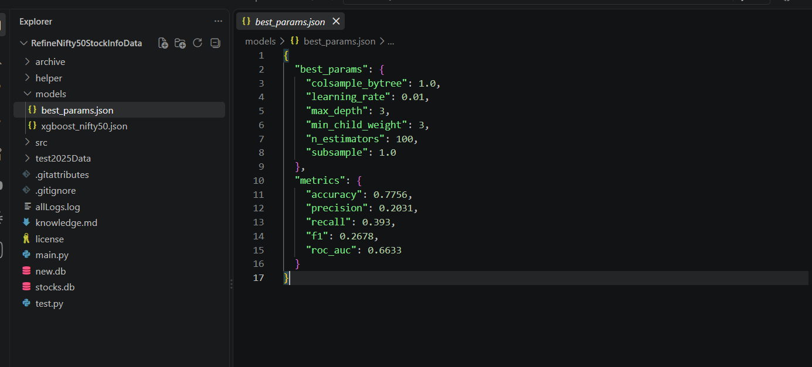
Nifty 50 Stock Predictor
End‑to‑end pipeline that ingests and refines Nifty 50 equity data, engineers time‑series features, and trains an XGBoost model to predict stock movement.
PythonXGBoostPandasML
Pursuing Master's in AI at the University of Maryland, driven by a passion for Machine Learning and Deep Learning. Backed by 4+ years as a Software Specialist at PTC R&D, building enterprise‑scale Java, Angular & Azure systems.
tip: watch the terminal → a live demo of what I work on.
// summary.md
As of September 2026, I'm pursuing M.S. in Artificial Intelligence at the University of Maryland, College Park, diving deeper into machine learning and AI systems.
I'm a Software Engineer with deep experience across the modern enterprise stack — from JVM backends and Angular frontends to Azure infrastructure, GitLab pipelines, and Salt/Terraform automation.
Previously shipped cloud‑migration tooling and PLM features at PTC R&D. Also worked on identity & SSO at MiniOrange and built NLP scoring systems as an Intern at Analytics Domain.
4+ years across enterprise R&D, identity, and analytics teams.
A mix of full‑stack apps, algorithm visualizers, computer‑vision experiments, and embedded systems.

End‑to‑end pipeline that ingests and refines Nifty 50 equity data, engineers time‑series features, and trains an XGBoost model to predict stock movement.
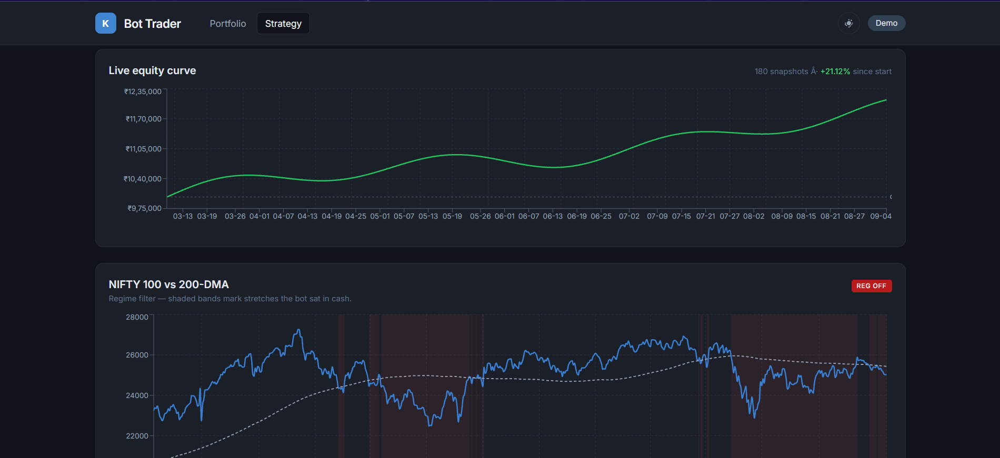
Personal automated trading platform built on insights from the Nifty 50 Stock Predictor — connects to Fyers via API to analyze, place, and manage trades with no human intervention, running 24/7 on an Oracle Cloud ARM VM. Sends monthly performance summaries via Telegram and email.
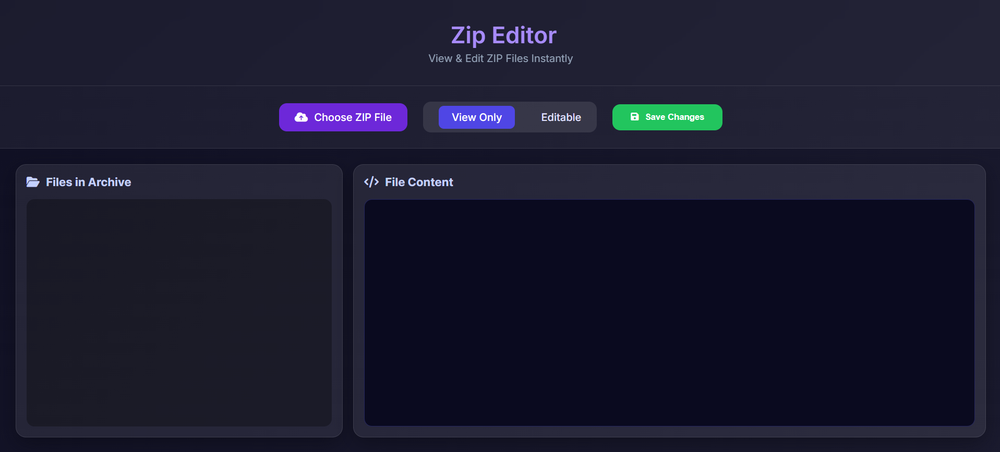
Specialized monitoring tool during migration project, submitting malformed packages would stall CI/CD pipeline for 22+ hours. It inspect, validate and correct package content on-demand before pipeline execution.
[ Impact reduce long-running pipeline failures, minimized engineering idle time, and saved multiple pipeline processing days by preventing late-stage execution breakdowns. ]
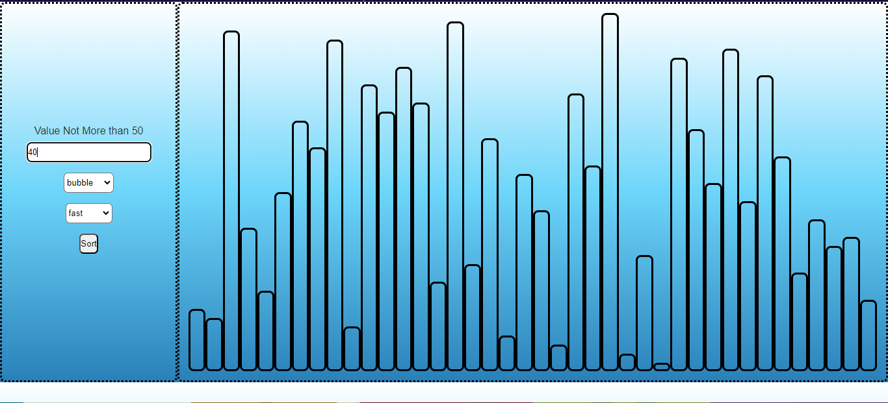
Visualizes 4+ sorting algorithms (Bubble, Quick, Insertion, Selection) with adjustable speed and array size.
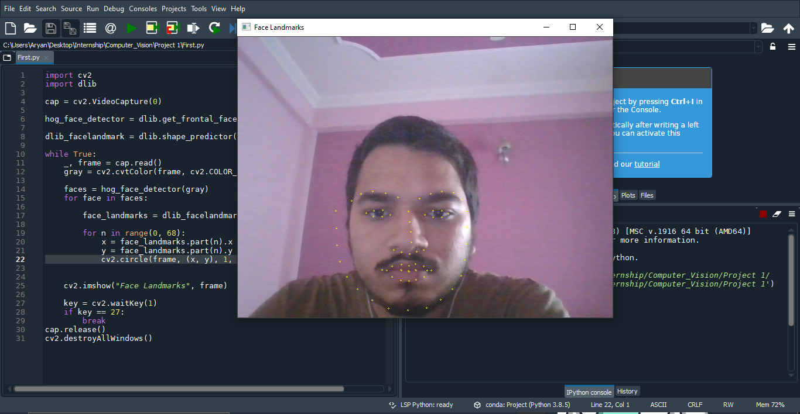
Real‑time facial landmark detection (68 points, iBUG dataset) overlaying digital masks.
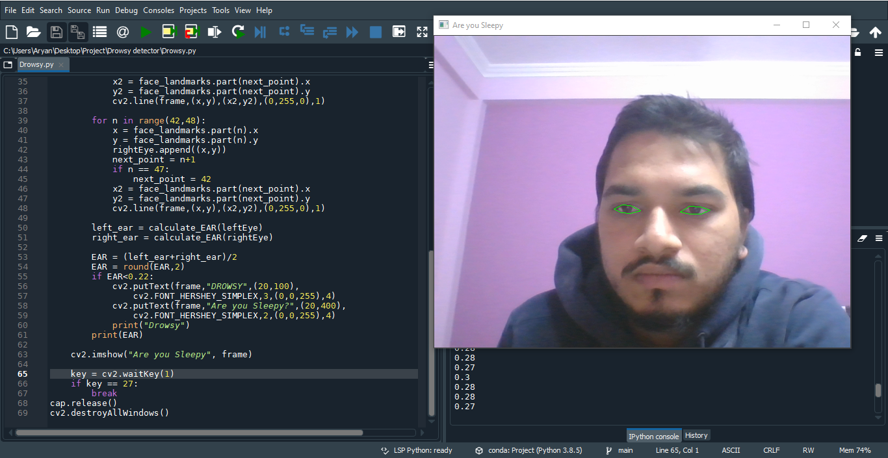
Eye Aspect Ratio (EAR) tracked in real time to trigger drowsiness alerts — safety‑focused CV.
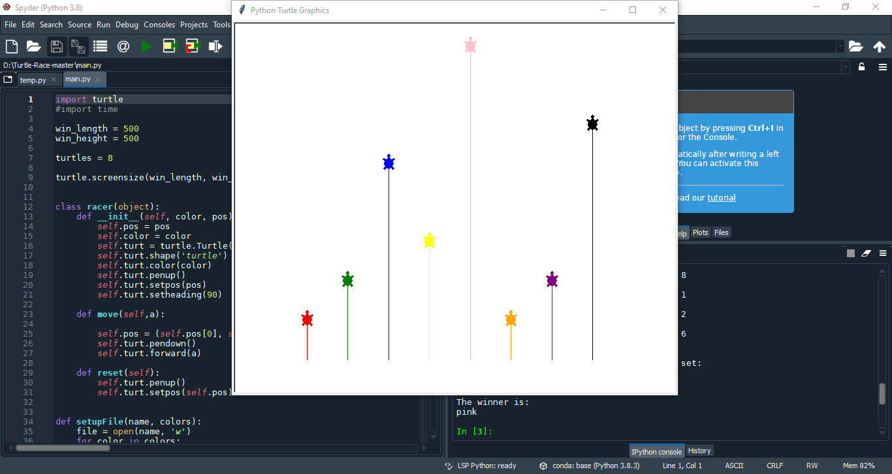
Race simulator using fuzzy‑logic inputs and max‑membership defuzzification — built without Python's fuzzy module.
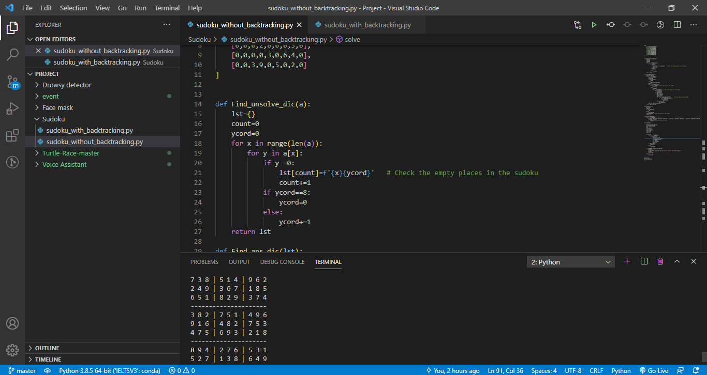
Two algorithms — backtracking and constraint propagation without backtracking — with performance comparison.
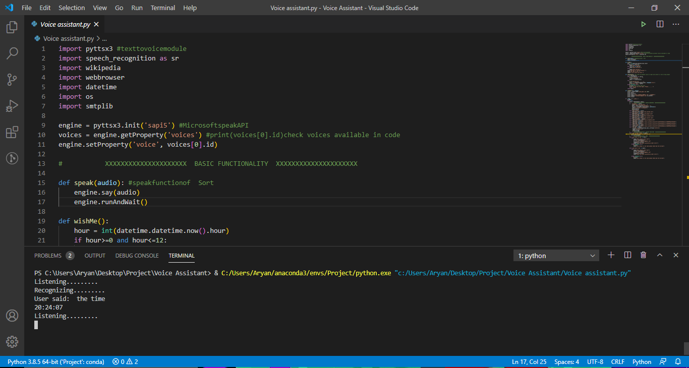
Voice‑interactive assistant with OS‑level access — file ops, app launching, and shell commands.
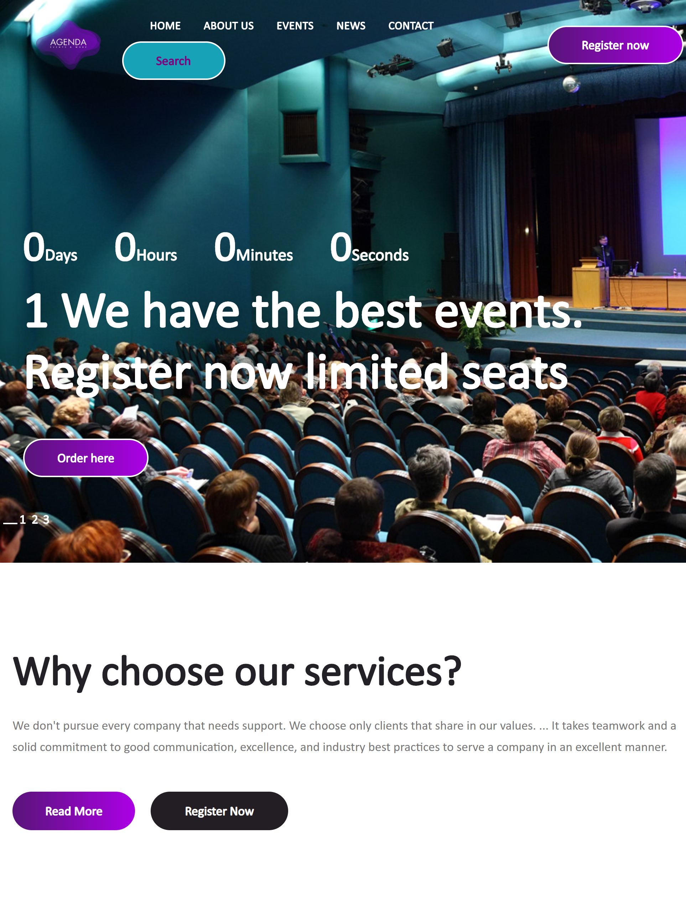
Event website built with Bootstrap on a local Django server with ORM persistence.
Op‑amp + thermistor circuit forming a heat‑detecting fire alarm. Hands‑on PCB design.
8051 microcontroller programmed to automate street‑light switching by time.
Comfortable across the full stack — backend, frontend, infra, and ML foundations.
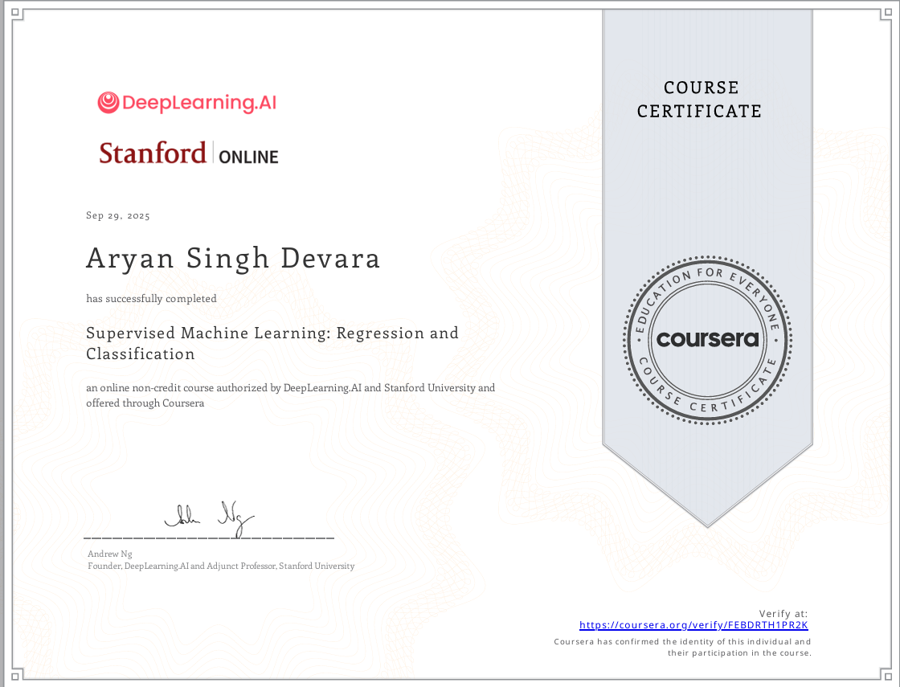
Stanford Online — regression, gradient descent, classification, overfitting.
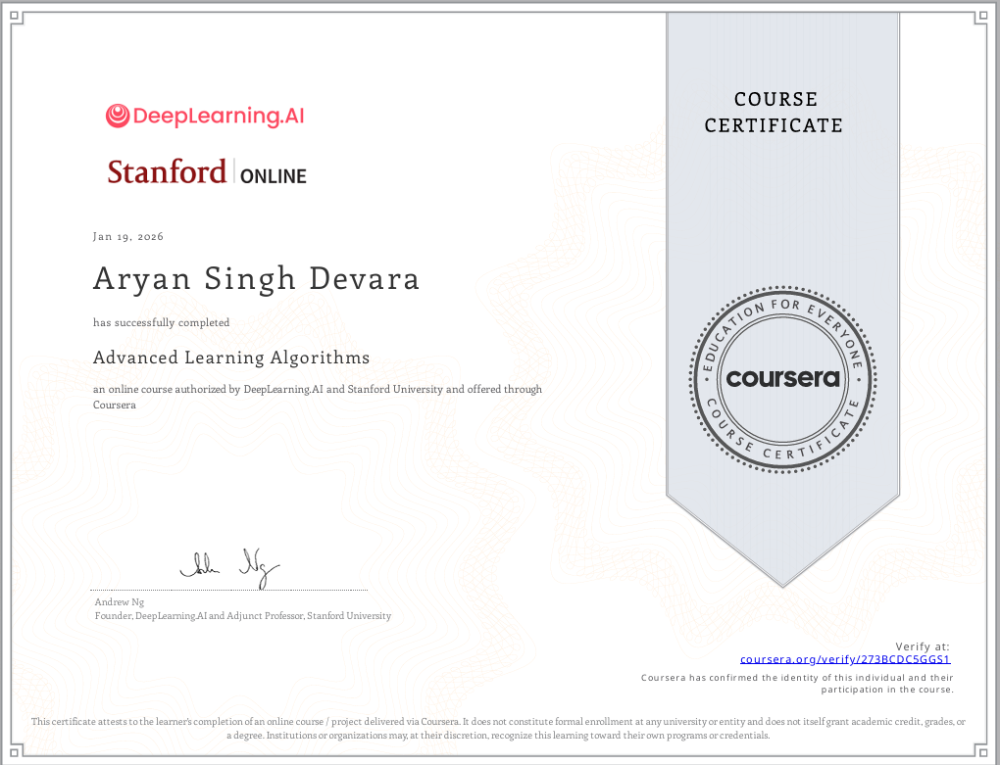
Neural networks, back‑propagation, regularization, bias–variance.
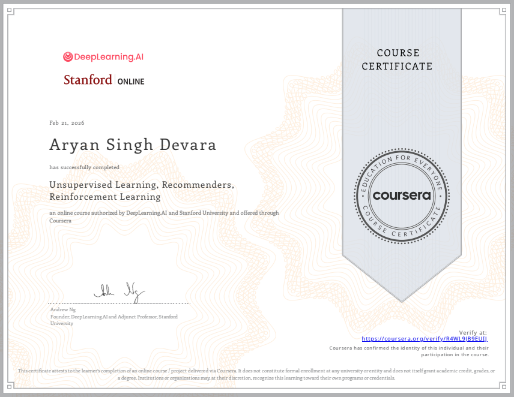
K‑means, PCA, recommender systems, MDPs, Q‑learning.
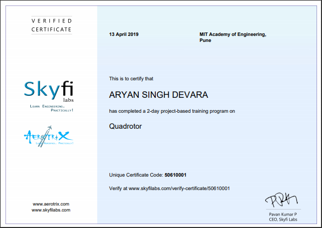
Two‑day hands‑on build on the KK2.1.5 board with PID tuning.
I'm open to full‑time roles, freelance contracts, and interesting collaborations. The best way to reach me is over email or LinkedIn.
I've received your message and will get back to you as soon as possible.